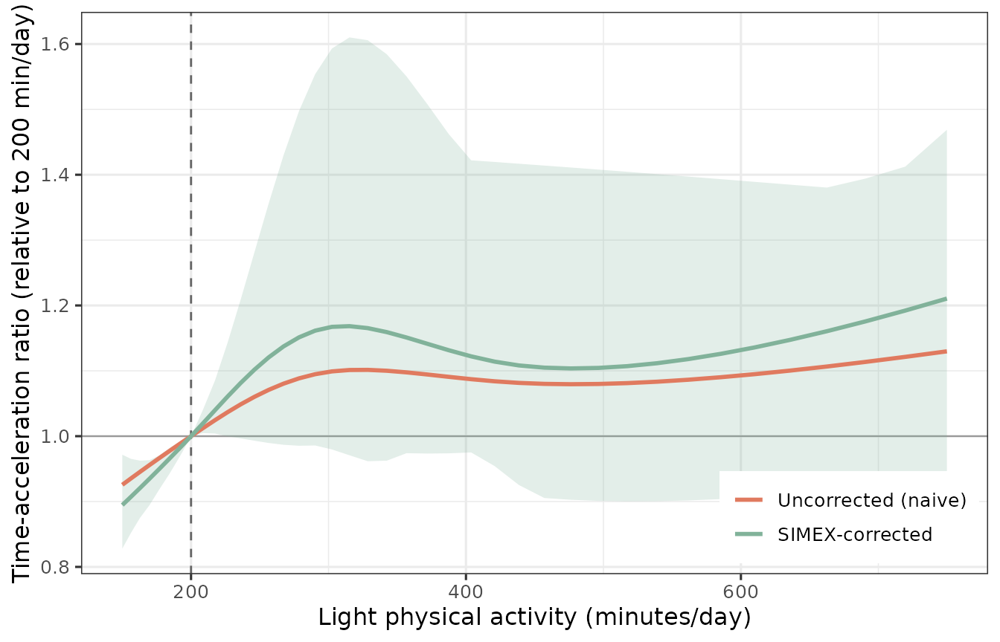
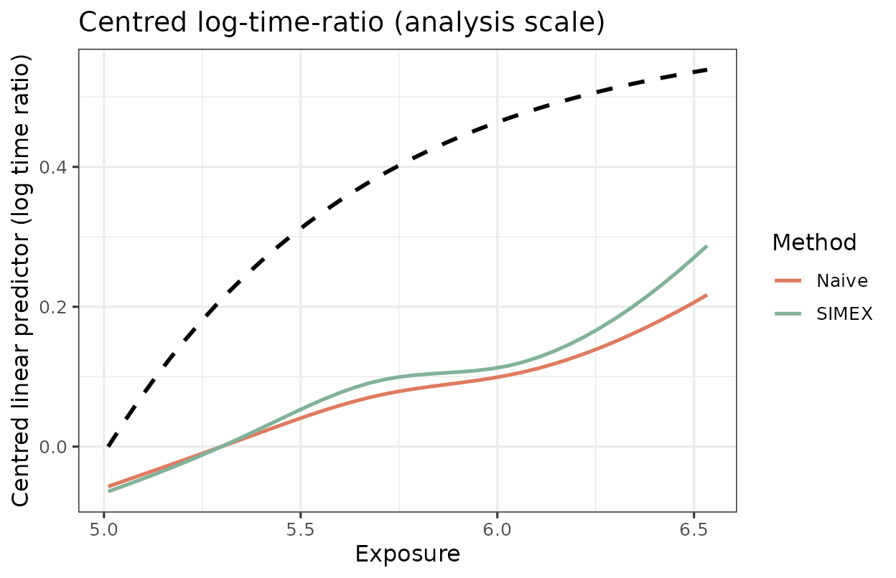

Applied example: daily LPA on the minute / time-ratio scale
Source:vignettes/applied-lpa.Rmd
applied-lpa.RmdThe quickstart reports the dose-response on the internal
log scale — the analysis axis of the AFT model,
log T = b0 + f(log W) + .... For an applied audience the
same fit is more interpretable on two transformed axes:
-
x-axis in minutes. Exponentiate the log-exposure
grid,
exp(x_grid), so the curve is read against daily LPA in minutes rather thanlogunits. -
y-axis as a time-acceleration ratio. Exponentiate
the centred curve,
TR(w) = exp{f(log w)}. Under the AFT model aTRof 1.2 means survival time is accelerated (delayed) by 20% relative to the reference exposure.
This article fits the pipeline on simulated daily-LPA data and presents it the way the manuscript reports the applied result: time ratio vs minutes, anchored at a clinical reference of 200 min/day, restricted to the interpretable exposure window.
library(aftsplex)
have_gg <- requireNamespace("ggplot2", quietly = TRUE)Simulate on the daily-LPA log scale
XM <- log(300); XS <- 0.45 # ~300 min/day, 95% ~ [124, 725] min
FA <- list(x_min = log(150), alpha = 3.0, beta = 0.6)
V_REF <- c(V1 = 30, V2 = 30, V3 = 0, V4 = 0)
set.seed(2026)
Su <- sigma_u_for_reliability(0.5, var_x = XS^2) # mean reliability 0.50
sim <- generate_aft_data(n = 1000, n_val = 300, Sigma_u = Su,
x_mean = XM, x_sd = XS, f_args = FA)
cal <- fit_me_calibration(sim$validation)
g <- gls_combine(as.matrix(sim$survival[, cal$W_cols]), cal)
dat <- sim$survival; dat$W_bar <- g$W_barAnchor and exposure window
Two applied choices matter here. First, the reference: instead of
anchoring the curve at the sparse left edge of the grid (where the
spline is least supported and the band is widest), we anchor
TR = 1 at a clinically meaningful 200
min/day via x_ref. Second, the window: the natural
cubic spline goes linear beyond the boundary knots and the data thin
below ~150 min, so we report only over the interpretable range (here,
>= 150 min up to the 95th percentile) rather than
extrapolating into the sparse tail.
REF_MIN <- 200; LOW_MIN <- 150
x_lo <- max(log(LOW_MIN), quantile(dat$W_bar, 0.05))
x_hi <- quantile(dat$W_bar, 0.95)
x_grid <- seq(x_lo, x_hi, length.out = 40)
x_ref <- log(REF_MIN)
LAMBDA <- c(0.5, 1, 1.5, 2)
s <- simex_aft_spline(dat, x_var = "W_bar", sigma_w_sq = g$sigma_w_sq,
covariates = names(V_REF), v_ref = V_REF,
lambda = LAMBDA, B = 30, x_grid = x_grid, x_ref = x_ref)
boot <- two_stage_bootstrap(
survival = sim$survival, validation = sim$validation, x_var = "X_true",
covariates = names(V_REF), v_ref = V_REF, lambda = LAMBDA,
B = 25, R = 40, x_grid = x_grid, x_ref = x_ref, verbose = FALSE)Headline figure: time ratio vs LPA minutes
The corrected (SIMEX) curve sits above the uncorrected (naive) curve
at high LPA: ignoring measurement error attenuates the dose-response
toward the null, so the naive time ratio understates the benefit. Both
are anchored at TR = 1 at 200 min/day; the shaded band is
the two-stage bootstrap 95% interval.
library(ggplot2)
df <- data.frame(min = exp(x_grid),
Naive = exp(s$curve_naive), SIMEX = exp(s$curve_simex),
lower = exp(boot$lower), upper = exp(boot$upper))
df_long <- rbind(
data.frame(min = df$min, tr = df$Naive, method = "Naive"),
data.frame(min = df$min, tr = df$SIMEX, method = "SIMEX"))
cols <- method_colors()[c("Naive", "SIMEX")]
ggplot() +
geom_hline(yintercept = 1, color = "grey60", linewidth = 0.4) +
geom_vline(xintercept = REF_MIN, color = "grey40",
linetype = "dashed", linewidth = 0.5) +
geom_ribbon(data = df, aes(min, ymin = lower, ymax = upper),
fill = cols[["SIMEX"]], alpha = 0.22) +
geom_line(data = df_long, aes(min, tr, color = method), linewidth = 1) +
scale_color_manual(values = cols, name = NULL,
labels = c(Naive = "Uncorrected (naive)",
SIMEX = "SIMEX-corrected")) +
labs(x = "Light physical activity (minutes/day)",
y = "Time-acceleration ratio (relative to 200 min/day)") +
theme_bw(base_size = 12) +
theme(legend.position = c(0.99, 0.02), legend.justification = c(1, 0))
The untransformed curve (appendix view)
The same fit on the internal log scale — the centred linear predictor
f(log w) — is what the simulation appendix reports. The
applied figure above is just this curve with both axes
exponentiated.
f_d <- function(x) do.call(f_true, c(list(x), FA))
truth <- f_d(x_grid) - f_d(x_grid[1])
plot(s, truth = truth, title = "Centred log-time-ratio (analysis scale)")
How much does Phase-1 uncertainty add?
The two-stage (nested = TRUE) bootstrap resamples both
the validation sample and the main study, so the band carries Phase-1
calibration uncertainty. Holding Phase-1 fixed
(nested = FALSE) isolates the main-study contribution; the
ratio of mean widths quantifies how much the finite validation sample
inflates the interval.
boot_single <- two_stage_bootstrap(
survival = sim$survival, validation = sim$validation, x_var = "X_true",
covariates = names(V_REF), v_ref = V_REF, lambda = LAMBDA,
B = 25, R = 40, x_grid = x_grid, x_ref = x_ref, nested = FALSE)
w_two <- mean(boot$upper - boot$lower, na.rm = TRUE)
w_single <- mean(boot_single$upper - boot_single$lower, na.rm = TRUE)
c(two_stage = w_two, single_stage = w_single,
inflation = w_two / w_single)
#> two_stage single_stage inflation
#> 0.3246416 0.3172668 1.0232447When the validation sample is small relative to the main study, the two-stage width is appreciably larger — which is exactly why the nested design is the default for reported intervals.
Parallel execution
The outer bootstrap loop parallelises over workers; see
vignette("faq") for the reproducibility caveat (the serial
workers = 1 path is the canonical bit-for-bit reproducible
one).
two_stage_bootstrap(sim$survival, sim$validation, x_var = "X_true",
covariates = names(V_REF), v_ref = V_REF,
x_grid = x_grid, x_ref = x_ref, R = 200, workers = 4)